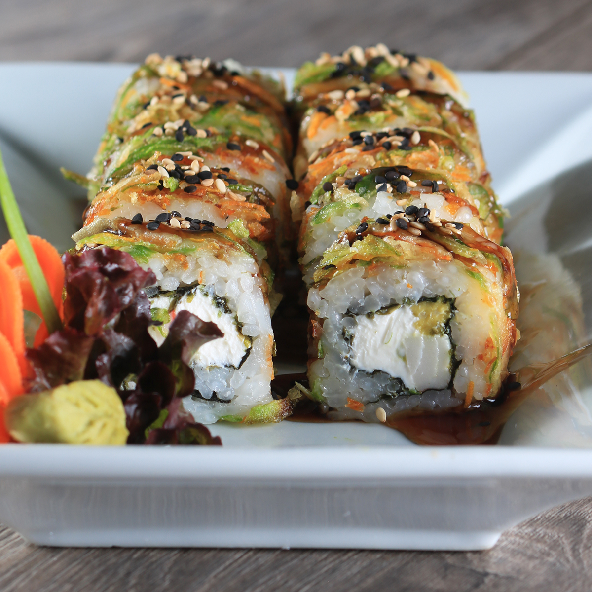
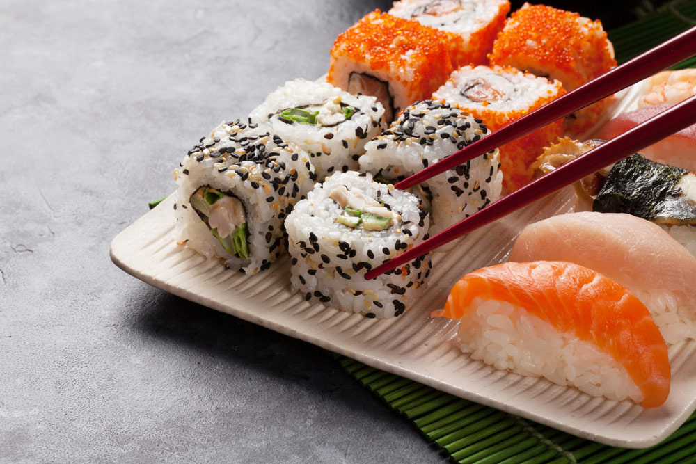
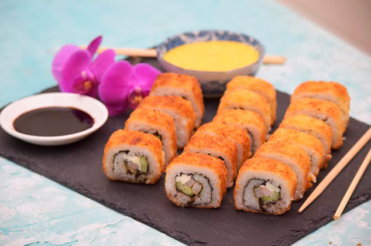

| MAKIS - NATURALES |
California Especial
- D: Camaron,Philadelphia,Aguacate y Pepino
- F: Masago y Ajonjoli
California Queso
- D: Surimi,Philadelphia,Aguacate y Pepino
- F: Ajonjoli
California Camaron
- D: Camarion,Aguacate y Pepino
- F: Ajonjoli
Philadelphia
- D: Salmon y Philadelphia
- F: Ajonjoli
Philadelphia Especial
- D: Salmon y Philadelphia
- F: Masago y Ajonjoli
Philadelphia Camaron
- D: Camaron y Philadelphia
- F: Ajonjoli
Vegetariano
- D: Calabacita,Zanahoria,Pepino,Aguacate y Philadelphia
- F: Alga y Ajonjoli
Serrano
- D: Philadelphia y Manchego
- F: Jamon Serrano y Ajonjoli
|
 |
| MAKIS - ESPECIALES |
Anguila
- D: Anguila,Philadelphia y Aguacate
- F: Anguila y Philadelphia
Furi
- D: Surimi,Philadelphia y Aguacate
- F: Furikate de Salmon y Ajonjoli
Mexicano
- D: Arrachera,Philadelphia y Chiles
- F: Ajonjoli
Mexicano Va
- D: Pollo,Philadelphia y Chiles
- F: Ajonjoli
Nevado
- D: Kushiague de Camaron y Philadelphia
- F: Ajonjoli,Philadelphia y Aderezo Tampico
Loto
- D: Salmon,Surimi,Aguacate y Philadelphia
- F: Alga y Ajonjoli
Ecologico
- D: Kushiague de Camaron y Philadelphia
- F: Ajonjoli, Aguacate y Salsa Kushiague
Ishino
- D: Camaron,Philadelphia y Aguacate
- F: Surimi y Ajonjoli
Nacional
- D: Salmon y Pepino
- F: Ajonjoli,Aguacate,Philadelphia y Surimi
Pinto
- D: Surimi y Aguacate
- F: Ajonjoli,Salmon y Philadelphia
Fundido
- D: Camaron,Aguacate y Philadelphia
- F: Ajonjoli,Queso Fundido y Salsa Kushiague
|
 |
| MAKIS - EMPANIZADOS |
Titanic
- D: Camaron,Salmon,Surimi,Pepino,Aguacate,Philadelphia y Manchego
- F: Ajonjoli,Aderezo Tampico y Salsa Kushiague
California Camaron
- D: Camaron,Philadelphia,Pepino y Aguacate
- F: Ajonjoli,Aderezo Tampico y Salsa Kushiague
California Cangrejo
- D: Surumi,Pepino,Aguacate y Philadelphia
- F: Ajonjoli,Aderezo Tampico,Salsa Kushiague y Ajonjoli
Pollo
- D: Pollo,Philadelphia y Manchego
- F: Ajonjoli,Aderezo Tampico y Salsa Kushiague
Camaron
- D: Camaron,Philadelphia y Manchego
- F: Ajonjoli,Aderezo Tampico y Salsa Kushiague
Salmon
- D: Salmon,Philadelphia y Manchego
- F: Ajonjoli,Aderezo Tampico y Salsa Kushiague
Tsunami
- D: Camaron,Salmon,Surumi,Pollo,Arrachera,Pepino,Aguacate,Philadelphia y Queso Manchego
- F: Ajonjoli,Aderezo Tampico y Salsa Kushiague
Chipotludo
- D: Pollo,Pepino y Chipotluformula
- F: Ajonjoli, Aderezo Tampico y Salsa Kushiague
Fundido Falso
- D: Camaron,Philadelphia,Manchego y Aguacate
- F: Ajonjoli,Aderezo Tampico y Salsa Kushiague
Arrachera
- D: Arrachera,Philadelphia y Manchego
- F: Aderezo Tampico y Pimiento Triturado
Serrano
- D: Jamon Serrano,Philadelphia y Manchego
- F: Aderezo Tampico y Pimiento Triturado
|
 |